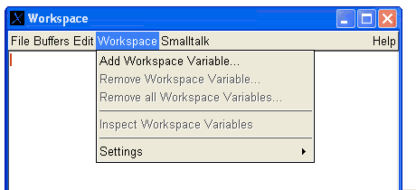
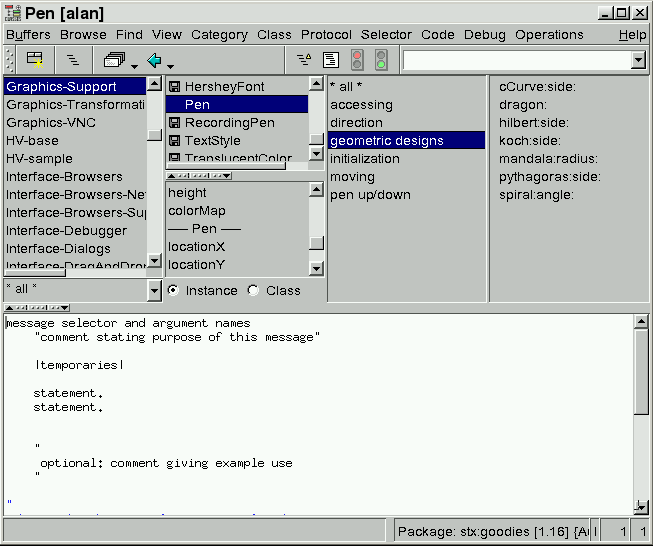
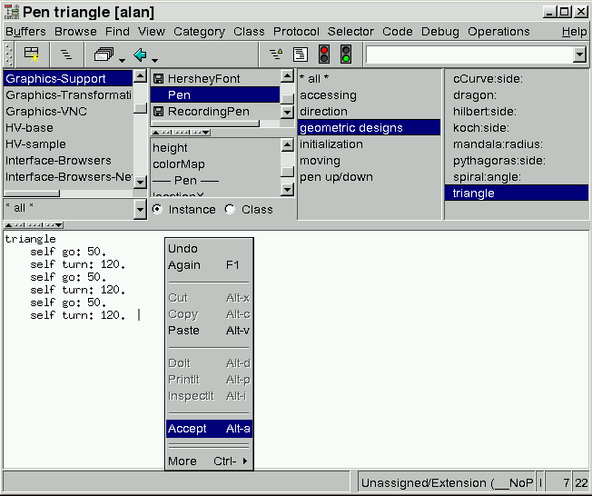

Let us declare these two variables now.
First, open a Workspace via the Launcher's menu or by evaluating:
WorkspaceApplication open
myPen" by selecting the "Add Workspace Variable"
menu item:

enter "myPen" into the appearing name dialog.
Repeat this procedure for a "myView" workspace variable.
Alternatively, you can change the workspaces settings, to automatically declare all unknown variables as workspace variables. Be aware that this opens the door to a bunch of strange errors when a variable's name is misspelled. Go to the "Workspace"-"Settings" menu for this.
Next, we must ensure that the Pen-class is present; it will be used in the
following examples.
For this, evalute "Smalltalk loadPackage:'stx:goodies'" in the workpace.
Then, evaluate the following code (in this or any other workspace):
| view |
myView := View new.
myView width: 200.
myView height: 200.
myView open.
myPen := Pen in: myView.
A pen's internal state consists (among others) of its current drawing position on the
canvas, the drawing direction and an up/down state.
Pens understand a bunch of useful messages, among them are:
- home
- positions the pen at the center of the window and sets its drawing direction to "east" (i.e. left-to-right)
- north
- changes the pen's drawing direction to "north" (i.e. up)
- turn: degrees
- makes the pen turn clockwise the given number of degrees
- down
- places the pen onto its drawing canvas (i.e. followup moves will leave a drawing on the canvas)
- up
- lifts the pen from its drawing canvas (i.e. followup moves will NOT draw on the canvas)
- go: distance
- makes the pen move forward along its drawing direction the given number of pixels
- fillColor: aColorObject
- changes the pen's drawing color
- clear
- clears the window
To make the pen draw a triangle, evaluate:
myPen home.
myPen go: 50.
myPen turn: 120.
myPen go: 50.
myPen turn: 120.
myPen go: 50.
myPen turn: 120.
myView clear.
myPen home.
myPen fillColor: (Color red).
myPen go: 50.
myPen turn: 120.
myPen go: 50.
myPen turn: 120.
myPen go: 50.
myPen turn: 120.
myPen fillColor: (Color black).
myView clear.
myPen home.
18 timesRepeat: [
myPen go: 50.
myPen turn: 120.
myPen go: 50.
myPen turn: 120.
myPen go: 50.
myPen turn: 120.
myPen turn:20.
]
Another nice picture (which also shows a good use of blocks) is generated by:
|rect|
rect := [:side | 4 timesRepeat:[ myPen go:side; turn:90 ] ].
myView clear.
myPen home.
36 timesRepeat: [
rect value:60.
myPen turn:10.
]
To inspect the internals of an object, we use a so called Inspector,
which can be opened by sending the object to be inspect an "inspect"-message.
Try:
myPen inspect.
Clicking on such an instance variable. The inspector shows the variable's value in the right so called code- or value pane.
It is also possible to interactively send messages to the inspected object
from within the inspector.
By entering the message expression into the code pane,
and evaluating it (using "doIt") just like in a workspace.
Within the inspector, the inspected object is referred to by the
pseudo-name "self";
Therefore, we cne send messages to the inspected object,
even if no global- or workspace-variable refers to it.
As an excercise, let the pen draw something using self-messages from within an inspector.
Browsers operate on the class(es) as they are present in your running system - in contrast to other so called IDEs, which operate on a classes source code as contained in a file. Changes done in a browser take effect immediately and are immediately available. There is no need to leave the system, recompile or restart the program for such changes.
There are many ways to open up a browser:
You can also browse any objects class by simply sending it a "
- - via the Launcher
- by pressing the browser icon or selecting the "SystemBrowser" item in the classes menu.
- - via a Workspace
- by selecting an expression's text and then applying the "others"-"browseIt" popup-menu function
- - via an Inspector
- the menu also provides a "browseIt" popup-menu function to browse the selected private variable's class
- - by evaluating an expression
- the browser can also be opened programatically. Either by sending the "
browse" message to a class or by sending an "open"-message to the browser-class itself.
browse" message.
Thus, to browse your pen's class, try:
myPen browse.
Excercises:
go:" and "turn"-messages
(in the Pen class) we used before ?
triangle"-message so that we can write:
myPen triangle.

In the text-area at the bottm, replace the shown text with the
code for the triangle-method, as:
triangle
self go: 50.
self turn: 120.
self go: 50.
self turn: 120.
self go: 50.
self turn: 120.
After you typed in (or copy-pasted) the text into the browser, 
install that new method, by selecting the "accept" item of the text-areas popup-menu. You can type in any garbage you like, or even use the code pane as a scratchpad workspace. What counts is the contents when the "accept" is performed.
After the accept, the browser will update its views to reflect the change - especially, you will see colorization and other markings in the class- and method lists. These indicate changes done to the system, and are described in more detail in the System Browser's Documentation. Also notice, that the browser displays your code with some colorization. Finally, if you want the browser to pretty-print your code (that is: to indent it in a way to reflect the control flow), press the browser's "PrettyPrint" button. It is found in the upper tool-panel, beside the breakpoint traffic lights.
Now, try to send this new message to our old friend, "myPen" by evaluating (in a workspace):
myPen triangle
(Sorry to get so excited, but that is what makes
an
integrated development environment really "integrated")
Not only new code can be added this way. If you select any existing method, change it and finally accept it.
Excercises:
Pen-method named "triangle:" (with colon),
which takes a single argument and draws a triangle with sides of that length.
triangle:" method works, change the older
"triangle"-method (without colon) to invoke that new method.
Such an action is called "refactoring" and is very common when working in Smalltalk.
The goal is to have an algorithm or piece of code only once in the system.
Avoiding such redundancy helps in the maintainability of a program.
From the Smalltalk perspective, these systems are not "integrated" at all, and would be called "sophisticated launchers" instead.

Copyright © Claus Gittinger Development & Consulting
Copyright © eXept Software AG
<cg@exept.de>